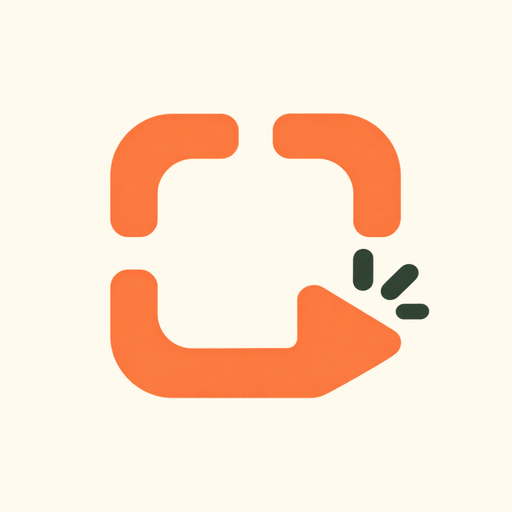
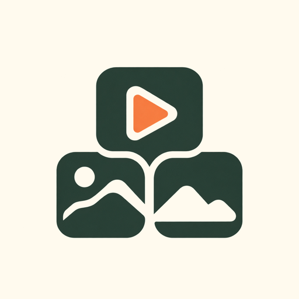
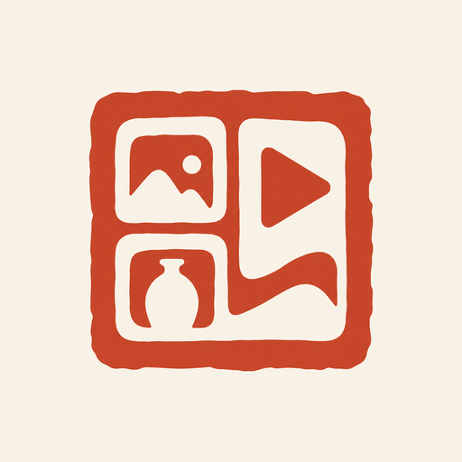
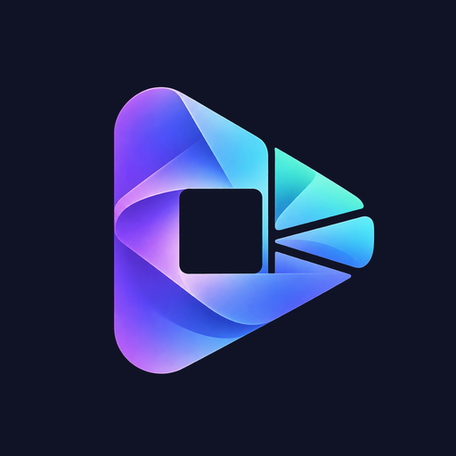
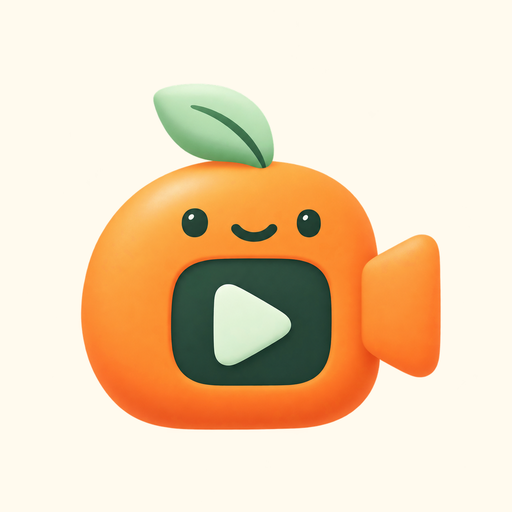
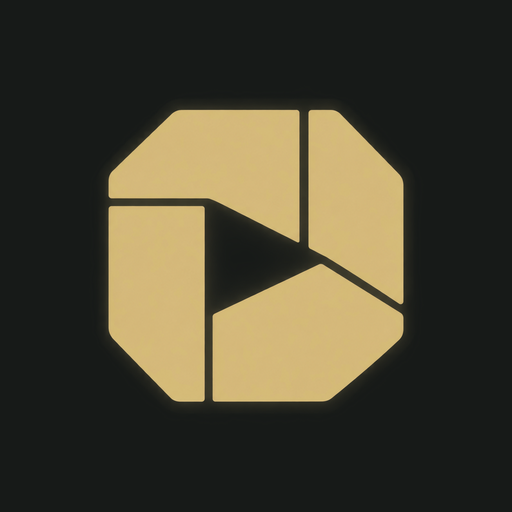

01 / Citrus minimalism
拍即成片
拍照取景框与播放切口合一，直接表达拍照成片。
首推：与现有 C 配色与圆角语言最接近。
10 款品牌标志提案。围绕“拍下商品，产出成套素材”，从轻松自助、几何秩序到未来科技。先看图形，再选品牌方向。

拍照取景框与播放切口合一，直接表达拍照成片。
首推：与现有 C 配色与圆角语言最接近。

三枚素材方块借“品”字结构组合，突出一件商品生成一套素材。
适合做稳定、长期使用的主品牌符号。
连续线带把照片边角转成播放形，表达一次操作完成制作。
适合动效、开屏和视频片尾延展。

印章结构结合素材格与播放切口，强调有章法、有成品感。
适合国货、手作、美食与文化商品的品牌调性。

棱镜将单个输入分解为多种内容，突出 AI 创作和多规格产出。
偏科技与 Plus 进阶工具，和 C 的气质差异较大。

把柚子与小导演合为亲和角色，传递轻松自助的创作体验。
与 C 社区气质相容，适合开屏、客服和运营表情延展。
胶片匣、票券与暖色块组合，形成有记忆点的复古影像品牌。
适合生活方式、小店、美食和文艺内容。

精密光圈与播放负形结合，强调品质、稳定和专业交付。
适合精品商家与高级商品素材服务。
像素相机结合播放符号，突出快速、好玩和内容创作者属性。
适合潮玩、年轻社区和活动传播。
三张折纸素材合成前进箭头，表达规范成套、快速交付。
适合工具型产品、批量素材与商业服务。